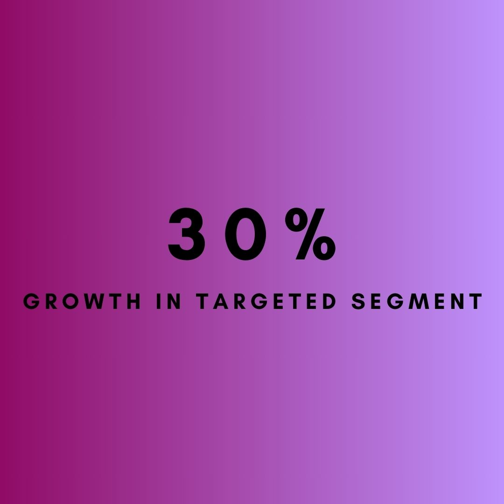
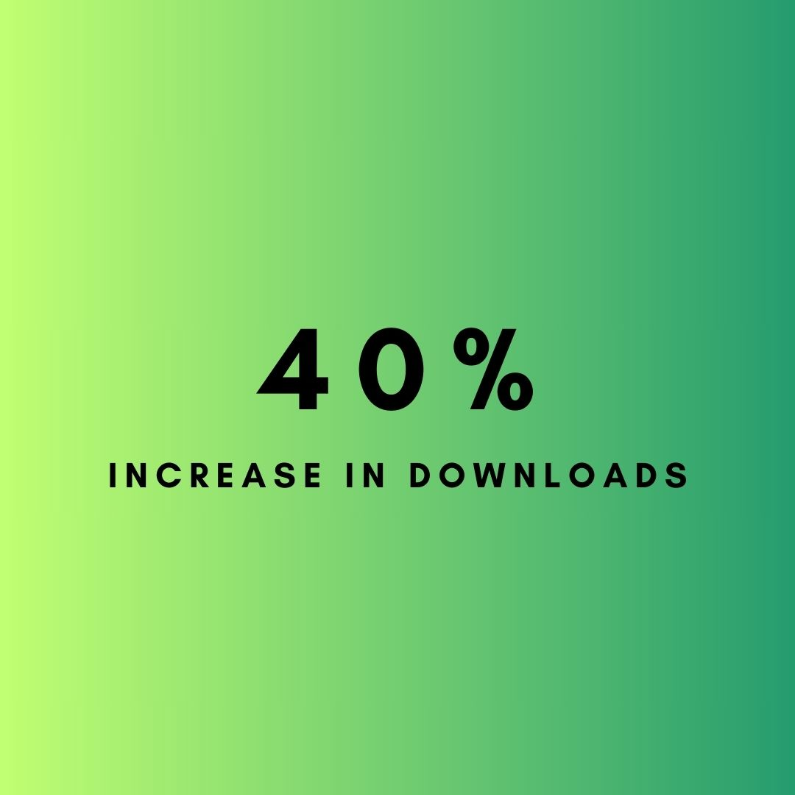
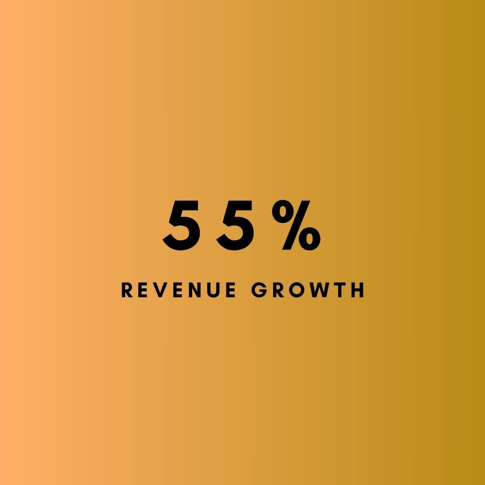
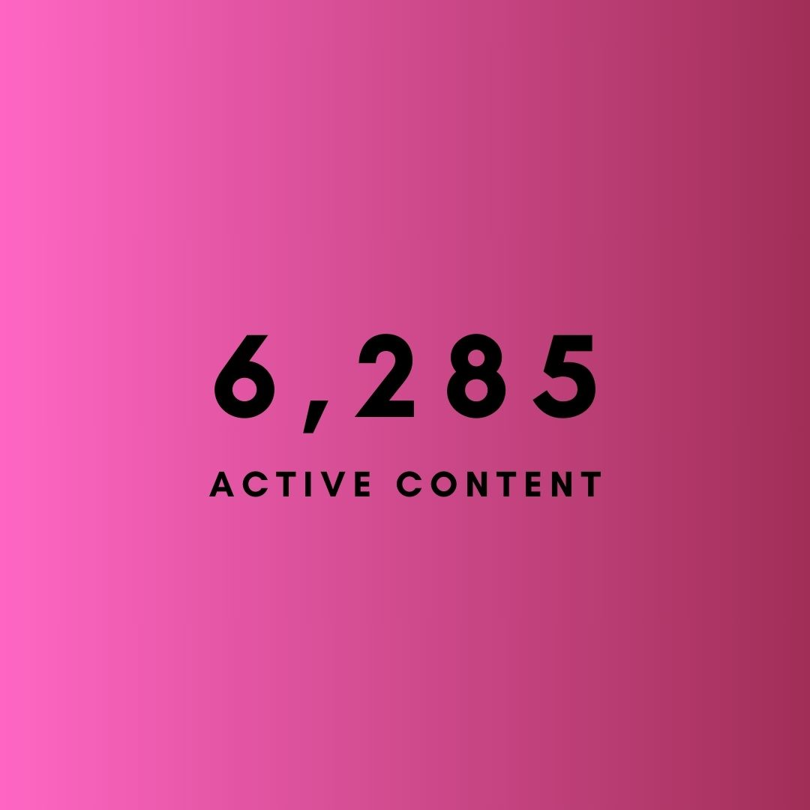
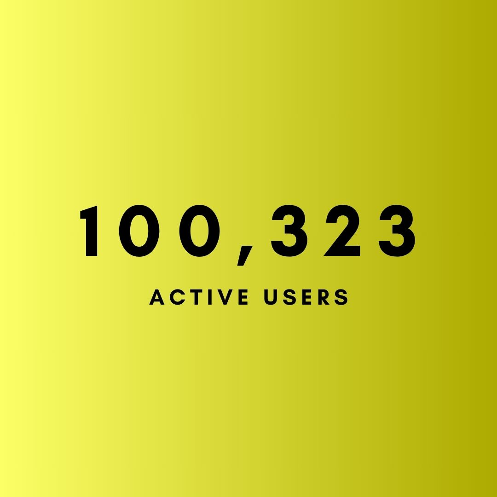

Launching a Movie Streaming platform
Emergence
Moodic was a movie streaming website, founded by four of us, developed and launched to stand out in the growing market of online streaming. To define product features and marketing mix appropriate to the target audience, I conducted a data-driven STP strategy.
Research Design and Data Collection
For the first step, and along with a thorough study on competition dynamics, I developed a survey to collect users' data to understand user preferences, pain points, and content consumption habits related to movie streaming services. This questionnaire was based on management's opinion and adapted from established universal resources. An excerpt of the survey can be seen below (300 data points).
Clustering and Segmentation
After exporting dataset into Excel, categorical variables were coded and I cleaned data by ensuring there are no missing values or inconsistencies. I uploaded the processed and prepared dataset (291 data points) into the R. To make sure, again I checked for missing values (tidyverse package) in the data frame, then conducted a cluster analysis (cluster library) based on two most rated criteria (price and number of content). Selecting the Euclidean distance and choosing k=3, I performed K-Means clustering and identified three main segments.
Segment 1: Budget-minded Movie Buff: Prioritizes Affordability.Enjoys a wide variety of movie genres. Heavy users of streaming services and rely on recommendations and reviews to discover new content.
Segment 2: The Family Streamer: Prioritizes family-friendly content and ease of use. Primarily watch on smart TVs and values features like parental controls and curated collections for children.
Segment 3: The Cinephile: Values high value content including independent and critically acclaimed films. Willing to pay more for a service with a curated selection. Less price sensitive.
Targeting
Due to limited resources of the startup, and to break through the competition with eager users, a subsegment of “Rebel Futuristic Community” was targeted for the launch campaign. These young people were risk-takers who held a new different view to life, valued the moment with strong bonds to their influencers through social media, and were willing to pay for entertainment that matches their values.
Positioning
This segment highly matched the white space in the market, and upon verified profitability, it was targeted.
To design an appropriate messaging for a segment that attaches itself to public figures, I suggested focusing on Community Leaders for marketing communications.
Go-to-Market Campaign
Based on the targeted segment characteristic, I suggested communication through the following media: .
- Social Media Influencers.
- Celebrities.
- Exclusive Content.
- Premiere Events.
RESULTS




